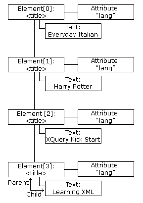

A list of nodes is returned by the getElementsByTagName() method and the childNodes property.
When using properties or methods like childNodes or getElementsByTagName(), a node list object is returned.
A node list object represents a list of nodes, in the same order as in the XML.
Nodes in the node list are accessed with index numbers starting from 0.
The following image represents a node list of the <title> elements in "books.xml":
The following code fragment loads "books.xml" into xmlDoc using loadXMLDoc() and returns a node list of title elements in "books.xml":
xmlDoc=loadXMLDoc("books.xml");
x=xmlDoc.getElementsByTagName("title");
After the execution of the statement above, x is a node list object.
The following code fragment returns the text from the first <title> element in the node list (x):
var txt=x[0].childNodes[0].nodeValue;
After the execution of the statement above, txt = "Everyday Italian".
A node list object keeps itself up-to-date. If an element is deleted or added, the list is automatically updated.
The length property of a node list is the number of nodes in the list.
The following code fragment loads "books.xml" into xmlDoc using loadXMLDoc() and returns the number of <title> elements in "books.xml":
xmlDoc=loadXMLDoc("books.xml");
x=xmlDoc.getElementsByTagName('title').length;
After the execution of the statement above, x = 4.
The length of the node list can be used to loop through all the elements in the list.
The following code fragment uses the length property to loop through the list of <title> elements:
var xmlDoc=loadXMLDoc("books.xml");
//the x variable will hold a node list
var x=xmlDoc.getElementsByTagName('title');
for (i=0;i<x.length;i++)
{
document.write(x[i].childNodes[0].nodeValue);
document.write("<br>");
}
Output:
Everyday Italian
Harry Potter
XQuery Kick Start
Learning XML
Example explained:
The attributes property of an element node returns a list of attribute nodes.
This is called a named node map, and is similar to a node list, except for some differences in methods and properties.
A attribute list keeps itself up-to-date. If an attribute is deleted or added, the list is automatically updated.
The following code fragment loads "books.xml" into xmlDoc using loadXMLDoc() and returns a list of attribute nodes from the first <book> element in "books.xml":
var xmlDoc=loadXMLDoc("books.xml");
var x=xmlDoc.getElementsByTagName('book')[0].attributes;
After the execution of the code above, x.length = is the number of attributes and x.getNamedItem() can be used to return an attribute node.
The following code fragment displays the value of the "category" attribute, and the number of attributes, of a book:
var xmlDoc=loadXMLDoc("books.xml");
var x=xmlDoc.getElementsByTagName("book")[0].attributes;
document.write(x.getNamedItem("category").nodeValue);
document.write("<br>" + x.length);
Output:
cooking
1
Example explained: